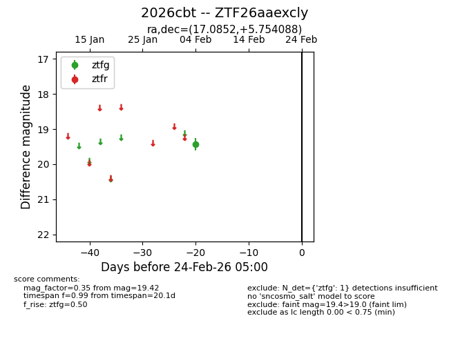
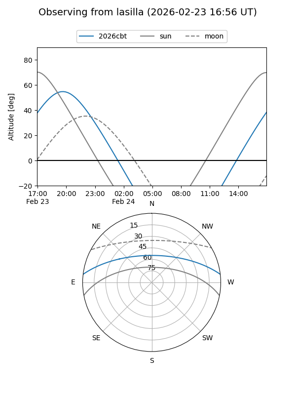
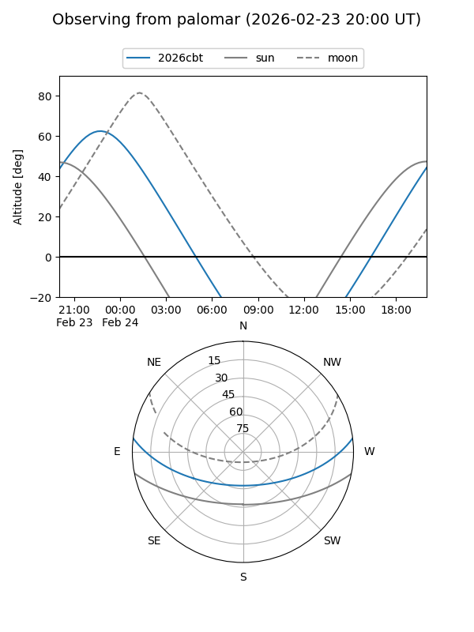

2026cbt
Target 2026cbt at 2026-02-24 09:08
Aliases and brokers:
FINK: link
Lasair: link
ALeRCE: link
TNS: link
YSE: link
alt names
ZTF26aaexcly (ztf,fink_ztf)
2026cbt (tns,yse)
Coordinates:
equatorial (ra, dec) = 17.0852,+5.75409
equatorial (HMS+DMS) = 01:08:20.45,+05:45:14.72
galactic (l, b) = (130.6398,-56.86448)
Flags:
Photometry:
last ztfg=19.42
1 ztfg detections
Lightcurve

Visibility


Additional plots